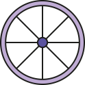

La Grande Roue de Paris était une roue de 65 mètres comportant 42 nacelles. Elle se trouvait sur la place de la Concorde. Suite à une décision du Conseil de Paris, elle a été démontée le 5 juillet 2018.
Elle n'a pourtant pas été la première roue que Paris ait connu puisque la première fut construite pour l'exposition universelle de 1900 et mesurait 100 mètres; elle fut démantelée en 1937.

La Grande roue de Paris
Scroll down